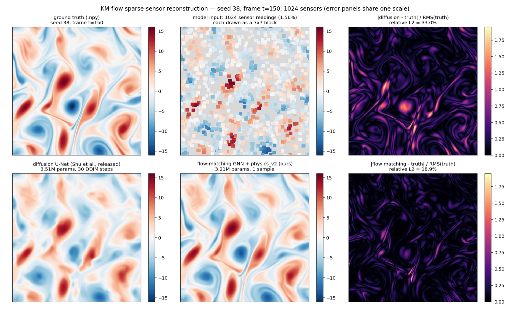
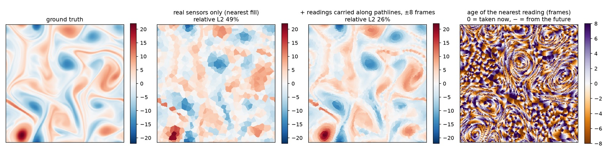
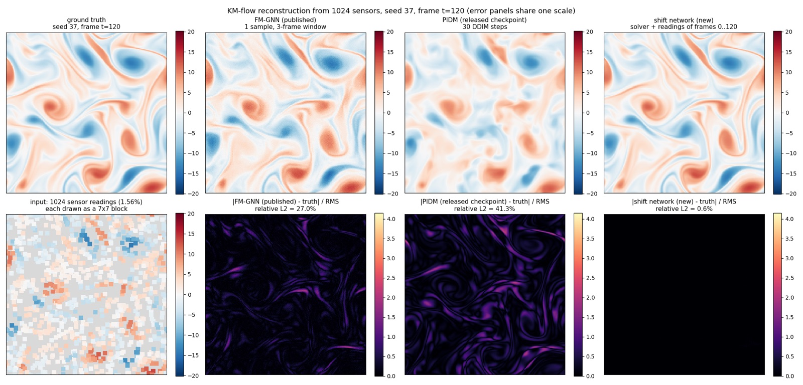

My MS thesis is machine learning for turbulent flows: how much of a turbulent flow you can recover from a handful of point sensors, and how to model turbulent radiative mixing layers. My BS thesis was on metalenses. Somewhere in between, I helped a robot handle very thin crystals.
The setup: 2D Kolmogorov flow at Re = 1000 on a 256 × 256 grid. You get 1024 point sensors, 1.56% of the grid, and you have to reconstruct the whole vorticity field. The published reference is a physics-informed diffusion model (Shu, Li & Barati Farimani, JCP 2023). I've attacked it three ways, each using a bit more of what the physics gives you for free.
| method | what it sees | rel. error |
|---|---|---|
| Diffusion U-Net (JCP 2023) | sensors, current window | 37.4% |
| FM_GNN (ours) | sensors, 3-frame window | 20.6% |
| FM_GNN + Lagrangian transport | sensor readings from ±8 frames | 13.3% |
Relative L2 error on the middle frame, 1272 test windows, one sample. The solver + shift approach below uses the equation itself and isn't comparable row-for-row, so it gets its own numbers.
A conditional flow-matching model (3.2M parameters) that maps Gaussian noise to the vorticity field, given the sensor readings. The backbone is a graph U-Net: message passing with periodic wrap-around, coarsening 256 → 32, and attention only at the coarsest level.
It cuts error by 44% compared with the diffusion baseline (L2 0.99 vs 1.77) and samples about 1.4× faster on the same GPU. The leftover physics error turned out to be sampler noise at high wavenumbers. Just respacing the sampler's time steps toward the end, with no retraining, cut the Navier–Stokes residual 16× (71.9 → 4.6) and the energy-spectrum error 2.7×.

In 2D there is no vortex stretching, so vorticity is carried along with the fluid and only drag, forcing and viscosity change it on the way: Dω/Dt = −4 cos 4y − 0.1 ω + ν∇²ω. A reading a sensor took a few frames ago is therefore still a measurement now, just at the place that parcel of fluid has moved to. Readings from future frames work the same way, traced backwards.
The pipeline needs no network and no ground truth. Estimate the velocity from the sensors (Biot–Savart on a blurred fill), carry every reading from ±8 frames along its pathline, re-estimate the velocity from the denser fill, and carry again. Each sensor becomes 17 readings. The same FM_GNN, with 432 extra parameters to read the new channels, drops to 13.3% error.

The catch: it's a smoother, so the answer arrives 8 frames late, and it uses more information than snapshot methods. It also only works for quantities the flow carries (2D vorticity, passive scalars), not pressure.
Why not just run the equation itself? A pseudo-spectral Navier–Stokes solver, nudged toward the sensor readings as they arrive, locks onto the true flow at 1024 sensors (RMSE 0.27, against a field RMS of about 4.7) but loses track at 512 or fewer. The error that's left is mostly vorticity in slightly the wrong place.
So I correct it with a smooth, area-preserving shift, d = (∂χ/∂y, −∂χ/∂x), fitted to the sensor misfit. A shift like that moves vorticity without creating any. With it, late-frame RMSE drops to 0.028. A small CNN (ShiftNet) then learns to write χ inside the loop, which keeps it working with fewer sensors: 0.046 at 512 sensors (the hand fit gets 0.169) and 0.19 at 256 (3.11).

The catch: it assumes you know the equation (the wrong Reynolds number leaves an error floor of about 0.4) and needs roughly 64 frames to lock on.
When hot and cold gas shear past each other, as they do around cold clouds in galactic halos, turbulence mixes them into gas at intermediate temperatures, which radiates its heat away quickly. These turbulent radiative mixing layers (TRMLs) decide whether a cold cloud grows or evaporates, and resolving them properly in simulations is expensive. I'm developing an ML model for them. in progress
My BS thesis: optimizing metalens phase profiles to focus light below the diffraction limit. The optimized design reaches a 0.252 µm focal spot, under the 0.292 µm Abbe limit for the same aperture.
A semi-automated system for stacking 2D van der Waals materials, with people from Mechanical Engineering, Physics and CS. I built the vision side: YOLOv8 + OpenCV flake detection that cut substrate scanning time by 80%.